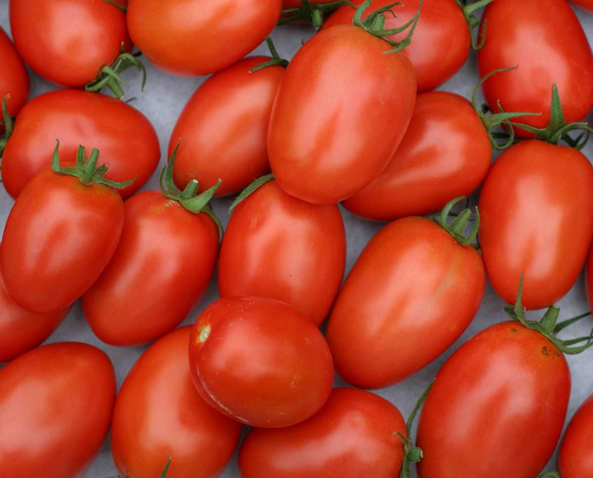
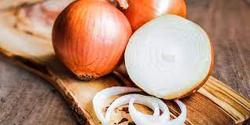
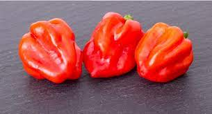
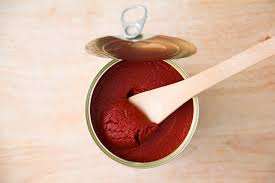
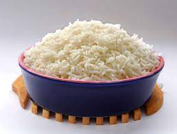
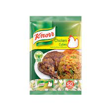

How to Make Jollof Rice in 5 Easy Steps


Jollof Rice, a classic Nigerian rice dish flavoured with tomatoes, perppers, and lots of seasonings.
Rice is in order! For those of you who don’t know;
I am a rice fiend! I could eat rice 100 times a day and still not be satisfied. One of my all time favorite rice dishes is a classic Nigerian dish that I grew up eating called Jollof rice. Today I am going to be sharing with you how to make it in just 5 easy steps!
Jollof rice is a West African dish that’s a staple in most households.
It definitely was a staple in my house growing up, and at parties, where you can rest assure that there will be pans and pans of it. This is the first reason I love attending Nigerian parties. Second would have to be for the music and dancing. It’s just too much fun!
There are many different ways to cook Jollof Rice. It is a dish made with rice, tomatoes, tomato paste, onions, red bell pepper, scotch bonnet peppers, salt, and spices. If it doesn’t have the above mentioned ingredients, then it’s not true Jollof. I make it the way my mum taught me, and I usually call it Nigerian Jollof because of the type of the rice that is used. Nigerians use the long grain rice that has been parboiled. Other versions i.e. Ghanaian Jollof will use basmati or jasmine rice.

Tips on Cooking The BEST Jollof Rice
- It is key to use parboiled rice so that you don’t end up with mushy rice in the end.
- When cooking the tomato stew, you can tell when it is done because the oil will rise to the top. It will be a deep red color and the bitter taste of the tomatoes has been cooked out.
- Reserve 1/4th of the tomato mixture and add it at the end to help prevent the rice from burning. Also, it gives the rice that beautiful red color we all know and love.
- Reserve 1/4th of the tomato mixture and add it at the end to help prevent the rice from burning. Also, it gives the rice that beautiful red color we all know and love.
Ingredients Needed to Cook Jollof Rice
- 5 medium sized Roma tomatoes, roughly chopped. 
- 1 red bell pepper, roughly chopped

- 1 medium sized onion, roughly chopped, set aside. 
- 2 scotch bonnet peppers (habanero peppers as they are sometimes called) 
- 1/4 cup of groundnut oil
- 3 tbsp tomato paste 
- 2 cups of parboiled rice 
- 2 1/2 cups of chicken stock

- 1 tsp salt to taste
- 1/2 tsp curry powder

- 1/2 tsp thyme

- 1 tsp All purpose seasoning

- 1 Knorr stock cube 
- 3 bay leaves

- Water, as needed
Instructions:
- Blend your tomatoes, red pepper, scotch bonnet peppers in a food processor or blender for about 45 seconds, make sure that everything is blended well.
- In a medium sized pot, heat your oil on medium-high heat. Once the oil is heated add the onions you set aside and fry just until they turn golden brown. Once the onions, have turned brown in color add the tomato paste and fry for 2-3 minutes. Then add the blended tomato mixture (reserve about 1/4 cup and set aside) and fry the mixture with the onions and tomato paste for about 30 minutes. Make sure you stir consistently so that the tomato mixture does not burn.
- After 30 minutes, turn the heat down to medium, and add the chicken stock. Mix and add your seasonings (salt, curry powder, thyme, all purpose seasoning, and the Knorr stock cube). Continue to boil for 10 minutes.
- Add the parboiled rice to the pot. Mix it very well with the tomato stew. At this point if you need to add water so that the rice is level with the tomato mixture/chicken stock go ahead and do so. Add the bay leaves, cover the pot, and cook on medium to low heat for 15-30 minutes.
- When the liquid has almost dried up add the remaining tomato stew, cover, and let it cook for another 5-10 minutes heat until the liquid has completely dried up. Turn off the heat, mix thoroughly, and your Jollof Rice is ready to be eaten!